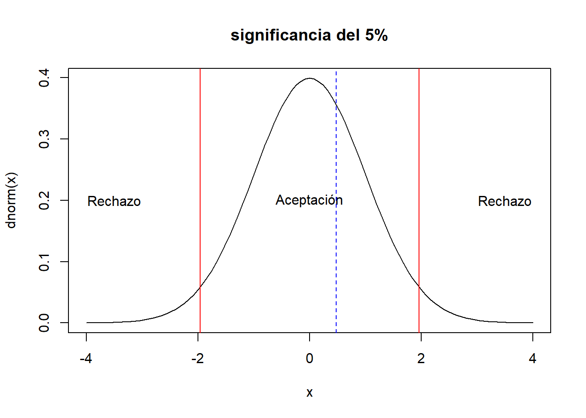
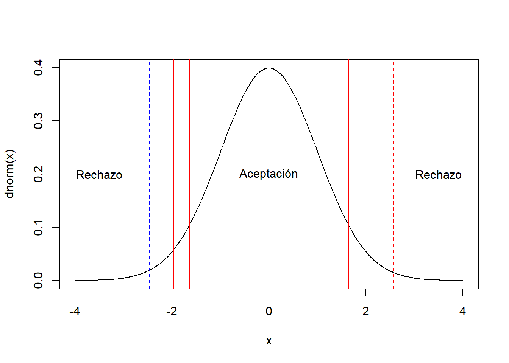
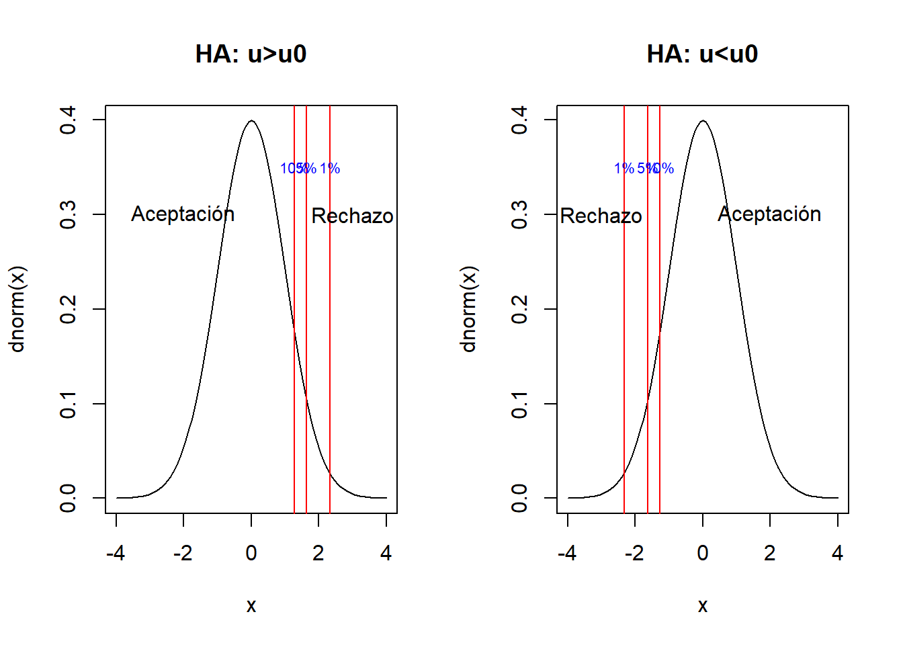

4 Prueba de Hipótesis
Dado que el principal objetivo de la inferencia estadística es aproximarse al valor de los parámetros (\(\theta\)) mediante un estimador muestral \(\hat{\theta}\) que viene de una distribución muestral y por lo tanto es una variable aleatoria también.
Otra estrategia a parte de la estimación (puntual o por intervalos) del parámetro \(\theta\) es la de plantear hipótesis al rededor de los valores del parámetro. A esto le vamos a denominar una prueba de hipótesis, donde solamente existen dos posibles resultados; Rechazamos la hipótesis o no la rechazamos.
En este tema se explora las pruebas de hipótesis estadísticas sobre parámetros comunes, vistos anteriormente:
- Media
- Diferencia de medias
- Proporción
- Diferencia de proporciones
- Datos pareados (colección de información de la misma unidad, en diversos momentos del tiempo)
- Varianza
- Igualdad de varianza
Adicionalmente, al final del tema se vera la pruebas de bondad de ajuste, que se sirven para plantear cuando una serie de datos tiene una determinada distribución
Todas las pruebas que se verán están enmarcadas en lo paramétrico, es decir, se realizarán supuestos respecto la distribución de la información y se trabaja con distribuciones conocidas como; la normal, t-student, \(\chi^2\), F.
Mencionar que existen las pruebas de hipótesis no paramétricas, estas funcionan sobre las distribuciones libres.
4.1 Introducción
4.1.1 Hipótesis estadística
Tener presente que la hipótesis que se defina debe estar siempre en términos del parámetro, no de la muestra. Cuando elaboramos una hipótesis esta tiene dos elementos; la hipótesis que se plantea (hipótesis nula) y el complemento de esta hipótesis (hipótesis alternativa), esta última puede ser de un lado o de dos lados.
\[H_0: \theta = k\] \[H_1: \theta \neq k \quad(\text{2 lados})\] \[H_1: \theta < k \quad(\text{1 lado})\] \[H_1: \theta > k \quad(\text{1 lado})\]
4.1.2 Región de aceptación y región de rechazo
Al plantear una hipótesis estadística sobre un parámetro de alguna población, la manera de verificar dicha hipótesis pasara por estudiar una muestra aleatoria sobre la cual se establecerá una regla que nos permita decir si la hipótesis es correcta o no. Tradicionalmente se definirá un estadístico de prueba que nos permitirá decidir. Por ejemplo, estamos interesados en conocer el promedio de ingresos laborales mensuales de las personas que viven en el municipio de La Paz. Planteamos la hipótesis nula:
\[H_0: \mu_{ingreso}=3000.Bs\] La hipótesis alternativa
\[H_1: \mu_{ingreso} \neq 3000.Bs\] Imaginemos que tomamos una muestra aleatoria de personas del municipio de La Paz y les consultamos acerca de su ingreso laboral mensual, el resultado del promedio muestral es de
\[\bar{x}=?\]
Una regla para contrastar una hipótesis es definir la región de aceptación y la región de rechazo, en este ejemplo podemos momentaneamente de forma arbitraria podemos decir que “aceptamos” la \(H_0\) si
\[2700\leq\bar{x}\leq 3100\]
En otro caso, se rechaza la hipótesis y la región que esta fuera de la región de aceptación se conoce como región de rechazo (\(\bar{x}<2700\) ó \(\bar{x}>3100\)).
Nota: En la práctica, normalmente la región de aceptación para pruebas de 2 lados coincide con el intervalo de confianza.
Tener presente los conceptos de:
- Hipótesis nula
- Hipótesis alternativa (1 lado, 2 lados)
- Estadístico de prueba
- Región de aceptación
- Región de rechazo
- Error de tipo I
- Error de tipo II
4.1.3 Errores de tipo I y errores de tipo II
(investigar de que se trata y buscar ejemplos)
- (Falso positivo) Error de tipo I (\(\alpha\))
- (Falso negativo) Error de tipo II (\(\beta\))


4.1.6 Pasos para la prueba hipótesis estadística
- Plantear la prueba de hipótesis; definir \(H_0\) y \(H_1\)
- Establecer el nivel de significancia (\(\alpha\)) de la prueba; el error de tipo I a tolerar, normalmente los valores más usuales son \(\alpha=\{0.01,0.05,0.1\}\)
- Seleccionar y construir el estadístico de prueba (\(Z\)) adecuado; se obtiene usando la información de una muestra aleatoria
- Determinar las regiones de aceptación y rechazo; estas regiones se construyen usando como insumo el paso 2 y 3
- Tomar una decisión en base al estadístico de prueba y las regiones de aceptación y rechazo identificadas. * \(Z \in RA \rightarrow \sim RH_0(AH_0)\) * \(Z \notin RA \rightarrow RH_0\)
- Alternativamente es recomendable calcular el p-valor
4.2 Prueba de hipótesis sobre la media
Para las pruebas al rededor de la media, vamos a suponer que los datos de interés se distribuyen como una normal o al menos que la muestra aleatoria para el estadístico de prueba es “grande” y por lo tanto podemos usar el teorema del limite central. Existen dos variaciones para esta prueba; cuando se conoce la varianza y cuando no se conoce
4.2.1 Con varianza conocida
- Hipótesis
\[H_0: \mu=\mu_0\] \[H_1: \mu \neq \mu_0\]
- Nivel de significancia; es \(\alpha\), dado que es una prueba bilateral existen dos regiones de rechazo, cada una de estas 2 regiones con probabilidad \(\alpha/2\)
- Estadístico de prueba; Se cuenta con una muestra aleatoria (\(X_1,X_2,\ldots,X_n\)) iid de tamaño \(n\), de tal forma que cada una de estas variables \(X_i\sim .(E(X_i)=\mu,\sigma(conocido))\). La estadística de prueba es:
\[Z_0=\frac{\bar{x}-\mu_0}{\frac{\sigma}{\sqrt{n}}}\]
Este estadístico supone que \(Z_0\sim N(0,1)\), en el supuesto que \(E[\bar{x}]=\mu=\mu_0\), este supuesto se cumple siempre y cuando \(H_0\) sea cierta
- Región de aceptación y rechazo
curve(dnorm(x),xlim=c(-4,4),main="significancia del 10%")
#
abline(v=c(-1.64,1.64),col="red")
text(c(-3.5,0,3.5),rep(0.2,3),c("Rechazo","Aceptación","Rechazo"))# al 5 %
curve(dnorm(x),xlim=c(-4,4),main="significancia del 5%")
abline(v=c(-1.96,1.96),col="red")
text(c(-3.5,0,3.5),rep(0.2,3),c("Rechazo","Aceptación","Rechazo"))# al 1 %
curve(dnorm(x),xlim=c(-4,4),main="significancia del 1%")
abline(v=c(-2.58,2.58),col="red")
text(c(-3.5,0,3.5),rep(0.2,3),c("Rechazo","Aceptación","Rechazo"))#qnorm(0.01/2)- La decisión; Se rechaza la \(H_0\) cuando:
\[Z_0>Z_{\alpha/2} \quad ó \quad Z_0<-Z_{\alpha/2}\] \[|Z_0|>Z_{\alpha/2}\]
Los valores usuales para los \(Z_{\alpha/2}\) son:
- al 10 de significancia: \(Z_{\alpha/2}=1.64\)
- al 5 de significancia: \(Z_{\alpha/2}=1.96\)
- al 1 de significancia: \(Z_{\alpha/2}=2.58\)
Ejemplo
Se esta estudiando el rendimiento de un proceso químico. De la experiencia previa se sabe que la varianza del rendimiento con este proceso es de 5. Los últimos cinco días de operación de la planta han dado como resultado los siguientes rendimientos: 91.6, 88.75, 90.8, 89.95 y 91.3.
Hay razón para creer que el rendimiento promedio es de 90. Tomar un nivel de significancia del 5%.
Solución,
\[H_0: \mu=90 \quad ; \quad H_1: \mu\neq 90\]
\[Z_0=\frac{\bar{x}-\mu_0}{\frac{\sigma}{\sqrt{n}}}=\frac{90.48-90}{\frac{\sqrt{5}}{\sqrt{5}}}=0.48\]
# al 5 %
curve(dnorm(x),xlim=c(-4,4),main="significancia del 5%")
abline(v=c(-1.96,1.96),col="red")
text(c(-3.5,0,3.5),rep(0.2,3),c("Rechazo","Aceptación","Rechazo"))
abline(v=0.48,col="blue",lty=2)
Para la decisión. Recordar que se rechaza \(H_0\) si:
\[0.48>1.96 \quad ó \quad 0.48<-1.96\] Por lo tanto no hay evidencia estadística suficiente para rechazar la hipótesis nula.
Ejercicio: En una muestra de 35 recien nacidos en un hospital durante el último mes se logró obtener el peso promedio (al nacer) y este fue de 2.9 kgr. Se sabe por registros historicos del hospital que la desviación estándar es de 0.4 Kgr. Se podría decir que el peso promedio de los recien nacidos es de 3.2 kgr. Considerar un nivel de significancia del 5% y del 1%. (10 minutos)
\[H_0: \mu=3.2 \quad H_1: \mu \neq 3.2\]
\[Z_0=\frac{\bar{x}-\mu_0}{\frac{\sigma}{\sqrt{n}}}=\frac{2.9-3.2}{\frac{0.4}{\sqrt{35}}}=-4.43\]
Al 5% de significancia:
\[-4.43>1.96 \quad ó \quad -4.43<-1.96\] Al 1% de significancia:
\[-4.43>2.58 \quad ó \quad -4.43<-2.58\]
curve(dnorm(x),xlim=c(-5,5),main="Ejercicio")
abline(v=c(-1.96,1.96),col="red")
abline(v=c(-2.58,2.58),col="darkgreen")
text(c(-3.5,0,3.5),rep(0.2,3),c("Rechazo","Aceptación","Rechazo"))
abline(v=-4.43,col="blue",lty=2)Por lo tanto se rechaza la H0 ya sea al 1% o al 5% de significancia.
pnorm(-4.43)# pvalor## [1] 4.711654e-06Ejemplo,
Se tiene un curso de estadística con su evaluación final sobre 100 puntos, se sabe por información pasada que la desviación estándar es alrededor de 10 pts. Se desea probar la hipótesis que el grupo tuvo un promedio de notas de 65 pts. Para realizar la prueba se obtuvo una muestra de 30 estudiantes, con el siguiente resultado:
set.seed(1447)
x<-round(runif(30,40,80),0)
x## [1] 57 60 59 44 79 59 63 58 68 62 49 77 79 51 78
## [16] 44 53 58 50 56 64 77 60 49 46 66 45 78 66 60\[H0: \mu=65\] \[H1: \mu \neq 65\] El estadístico de prueba es:
\[Z_0=\frac{\bar{X}-\mu_0}{\frac{\sigma}{\sqrt{n}}}=\frac{60.5-65}{\frac{10}{\sqrt{30}}}=-2.465\]
curve(dnorm(x),xlim=c(-4,4),main="")
abline(v=(60.5-65)/(10/sqrt(30)),col="blue",lty=2)
abline(v=c(-1.96,1.96),col="red")
abline(v=c(-1.64,1.64),col="red")
abline(v=c(-2.58,2.58),col="red",lty=2)
text(c(-3.5,0,3.5),rep(0.2,3),c("Rechazo","Aceptación","Rechazo"))
Se rechaza H0 si:
\[-2.465>1.64 (F) \quad ó \quad -2.465<-1.64 (V) \quad 10\%\] \[-2.465>1.96 (F) \quad ó \quad -2.465<-1.96(V) \quad 5\%\]
\[-2.465>2.58 (F) \quad ó \quad -2.465<-2.58(F) \quad 1\%\] Al 10 y 5 % de significancia se rechaza la hipótesis nula, sin embargo, al 1% no se rechaza.
Ejemplo.
Se sabe que los diámetros de tornillos tienen una desviación estándar de 0.0001 plg. Una muestra aleatoria de 35 tornillos produce un diámetro promedio de 0.2546 plg. Prueba la hipótesis de que el diámetro medio real es de 0.255 plg. empleando un \(\alpha=0.05\).
\[H_0: \mu=0.255\] \[H_1: \mu\neq0.255\]
\[Z_0=\frac{0.2546-0.255}{\frac{0.0001}{\sqrt{35}}}=-23.66\]
Se rechaza \(H_0\) si:
\[-23.66>1.96 \quad ó \quad -23.66<-1.96\]
Por lo tanto rechazamos la hipótesis nula de que la media de diámetro de los tornillos sea de 0.255 plg.
4.2.1.1 Para pruebas unilaterales
Para las pruebas unilaterales se utiliza el mismo estadístico de prueba \(Z_0\), con las siguientes hipótesis y región de rechazo.
\[H_0: \mu=\mu_0\] \[H_1: \mu>\mu_0\] Se rechaza \(H_0\) si:
\[Z_0>Z{\alpha}\]
\[H_0: \mu=\mu_0\]
\[H_1: \mu < \mu_0\] Se rechaza \(H_0\) si:
\[Z_0<-Z{\alpha}\]
Los valores usuales para los \(Z_{\alpha}\) de pruebas unilaterales.
- \(Z_{\alpha=0.1}=1.28\)
- \(Z_{\alpha=0.05}=1.64\)
- \(Z_{\alpha=0.01}=2.33\)
par(mfrow=c(1,2))
curve(dnorm(x),xlim=c(-4,4),main="HA: u>u0")
abline(v=c(1.28,1.64,2.33),col="red")
text(c(-2,3),c(0.3,0.3),c("Aceptación","Rechazo"))
text(c(1.28,1.64,2.33),rep(0.35,3),paste0(c(10,5,1),"%"),cex=0.7,col="blue")
curve(dnorm(x),xlim=c(-4,4),main="HA: u<u0")
abline(v=-c(1.28,1.64,2.33),col="red")
text(c(2,-3),c(0.3,0.3),c("Aceptación","Rechazo"))
text(-c(2.33,1.64,1.28),rep(0.35,3),paste0(c(1,5,10),"%"),cex=0.7,col="blue")
dev.off()## null device
## 1Ejercicio: Para el caso de los recien nacidos constrastar ambas pruebas unilaterales con un nivel de significancia del 1%. ¿Qué se puede concluir?.
\[H_0: \mu=3.2 \quad H_1: \mu>3.2\]
Recordar que se rechaza H0 si:
\[Z_0>Z_{\alpha} \rightarrow -4.44>2.33\]
Por lo tanto, no se rechaza H0
\[H_0: \mu=3.2 \quad H_1: \mu<3.2\]
Recordar que se rechaza H0 si se cumple:
\[Z_0<-Z_{\alpha} \rightarrow -4.44< -2.33\]
Por lo tanto, se rechaza H0.
4.2.2 Con varianza desconocida
Si el tamaño de muestra fuera mayor 30, todo lo visto anteriormente se mantiene, el único cambio se da al momento de calcular el estadístico de prueba donde en lugar de \(\sigma\) tomamos la varianza muestral \(S^2\)
\[Z_0=\frac{\bar{x}-\mu_0}{\frac{S}{\sqrt{n}}}\]
Si la muestra no es mayor 30, podemos suponer que los datos son normales y la aproximación para la región de aceptación y rechazo vienen de una t-student.
- Estadístico de prueba
\[t_0=\frac{\bar{X}-\mu_0}{\frac{S}{\sqrt{n}}}\]
- Región de aceptación y rechazo; si \(H_0\) es cierta, entonces:
\[t_0\sim t(n-1)\]
- La decisión; Se rechaza la \(H_0\) cuando:
\[t_0>t_{\alpha/2,n-1} \quad ó \quad t_0<-t_{\alpha/2,n-1}\]
Hasta ahora se tienen 3 casos:
- Varianza conocida: Se usa el \(Z_0\) empleando \(\sigma\), las regiones críticas se arman con base a la distribución normal (Se asume normalidad en los datos)
- Varianza desconocida, con \(n>30\): Se usa el \(Z_0\) empleando \(S\), las regiones críticas se arman con base a la distribución normal
- Varianza desconocida, con \(n\leq30\): Se usa el \(t_0\) empleando \(S\), las regiones críticas se arman con base a la distribución t-student. (Se asume normalidad en los datos)
Ejercicio: Se tiene una muestra aleatoria de 7 plantas del mismo tipo, y se mide el largo de su tallo. Los resultados en cm. fueron: 5, 7, 7, 5, 6, 9 y 4. El largo del tallo es una medida que permite evaluar cuando cambiar de ambientes las plantas, esto debe suceder si el tallo supera los 7 cm. Realizar una prueba de hipótesis estadística.
Solución:
\[H_0: \mu = 7 \quad H_1: \mu>7\]
\[t_0=\frac{\bar{x}-\mu_0}{\frac{S}{\sqrt{n}}}=\frac{6.14-7}{0.63}=-1.35\]
Se rechaza la hipótesis nula si el estadístico de prueba cumple con (vamos a usar un \(\alpha=0.05\)):
\[t_0>t_{\alpha,n-1} \rightarrow \quad -1.35>t_{0.05,6}=1.943\] Por lo tanto no se rechaza la H0.
Ejemplo,
Para el caso de las notas finales, probar la hipótesis suponiendo varianza desconocida y usar \(z_0\) y en otro caso usando la \(t_0\). Al 5% evaluar si se rechaza H0
sd(x);length(x);mean(x)## [1] 11.05706## [1] 30## [1] 60.5\[z_0=\frac{\bar{X}-\mu_0}{\frac{\hat{S}}{\sqrt{n}}}=\frac{60.5-65}{\frac{11.057}{\sqrt{30}}}=-2.23\]
Así como \(z_0=-2.23<-1.96\) se rechaza H0.
\[t_0=\frac{\bar{X}-\mu_0}{\frac{\hat{S}}{\sqrt{n}}}=-2.23\]
Para rechazar H0,
\[-2.23>2.045=t_{\alpha/2,n-1} \quad ó \quad -2.23<-2.045=-t_{\alpha/2,n-1}\]
curve(dt(x,29),xlim = c(-4,4),main="t(n-1=29)")
ta<-qt(0.05/2,30-1,lower.tail = F)
abline(v=c(-ta,ta),col="red")Por lo tanto se rechaza H0
4.3 Prueba de hipótesis sobre la diferencia de medias
Esta prueba se utiliza principalmente cuando se contrasta valores de 2 poblaciones independientes. Las hipótesis son:
\[H_0: \mu_1=\mu_2\] \[H_1: \mu_1\neq\mu_2\]
Suponemos que se extrae muestras aleatorias de cada una de las poblaciones de tamaño \(n_1\) y \(n_2\) respectivamente. Se supone que cada una de las muestras las poblaciones se distribuyen iid con media desconocida y varianza conocida. Si suponemos que la muestra en ambas poblaciones son grandes \(n_1,n_2>30\) usando el teorema central del limite podemos afirmar en base a los capítulos anteriores
\[\bar{x}_1-\bar{x}_2\sim N \left(\mu_1-\mu_2,\frac{\sigma_1^2}{n_1}+\frac{\sigma_2^2}{n_2}\right)\] Por lo tanto se puede plantear como estadístico de prueba si \(H_0\) es cierta:
\[Z_0=\frac{\bar{x}_1-\bar{x}_2}{\sqrt{\frac{\sigma_1^2}{n_1}+\frac{\sigma_2^2}{n_2}}}\sim N(0,1)\]
Finalmente, en base a la distribución de \(Z_0\), se rechaza la igualdad de medias cuando:
\[Z_0>Z_{\alpha/2} \quad ó \quad Z_0< -Z_{\alpha/2} \] Cuando la varianza no es conocida pero el tamaño de muestra es mayor a 30 para ambas poblaciones, el estadístico de prueba es el único que cambia
\[Z_0=\frac{\bar{x}_1-\bar{x}_2}{\sqrt{\frac{S_1^2}{n_1}+\frac{S_2^2}{n_2}}}\sim N(0,1)\] Cuando \(H_1: \mu_1>\mu2\) se rechaza la \(H_0\) cuando:
\[Z_0>Z_{\alpha}\] Cuando \(H_1: \mu_1<\mu2\) se rechaza la \(H_0\) cuando:
\[Z_0<-Z_{\alpha}\] Cuando la muestra es menor o igual 30 en una o ambas poblaciones, se debe hacer el supuesto que los datos son normales y aproximar la distribución a una \(t-student\). En este caso el estadístico de prueba es:
\[t_0=\frac{\bar{x}_1-\bar{x}_2}{\sqrt{\frac{S_1^2}{n_1}+\frac{S_2^2}{n_2}}}\]
Lo anterior para el estadístico \(t_0\) es valido bajo el supuesto de normalidad de los datos y las varianzas de las poblaciones no son iguales \(\sigma_1 \neq \sigma_2\).
En el caso donde suponemos igualdad de varianzas \(\sigma_1 = \sigma_2\). El estadístico de prueba es:
\[t_0=\frac{\bar{x}_1-\bar{x}_2}{S_p\sqrt{\frac{1}{n_1}+\frac{1}{n_2}}}\] Donde:
\[S^2_p=\frac{(n_1-1)S_1^2+(n_2-1)S_2^2}{n_1+n_2-2}\]
Nota: Esta \(S^2_p\) es una varianza ponderada que emplea información de las varianzas muestrales, en el supuesto que \(\sigma_1=\sigma_2=\sigma\)
Entonces, para el caso de igualdad de varianza se rechaza la \(H_0\) cuando:
\[t_0>t_{\alpha/2,n_1+n_2-2} \quad ó \quad t_0<-t_{\alpha/2,n_1+n_2-2}\] Cuando las varianzas no son iguales, se rechaza la \(H_0\) cuando:
\[t_0>t_{\alpha/2,v} \quad ó \quad t_0<-t_{\alpha/2,v}\] Donde:
\[v=\frac{\frac{S_1^2}{n_1}+\frac{S_2^2}{n_2}}{\frac{(S^2_1/n_1)^2}{n_1+1}+\frac{(S^2_2/n_2)^2}{n_2+1}}-2\]
Ejemplo.
Dos tipos de plásticos son apropiados para que los utilice un fabricante de componentes electrónicos. La resistencia al rompimiento de estos plásticos es importante. Se sabe que \(\sigma_1=\sigma_2=1.0\) psi. De una muestra aleatoria de tamaño \(n_1 = 10\) y \(n_2 = 12\) obtenemos \(\bar{X}_1 = 162.5\) y \(\bar{X}_2 = 155.0\). La compañía no adoptará el plástico 1 a menos que su resistencia al rompimiento exceda la del plástico 2 al menos por 10 psi. De acuerdo con la información de la muestra, ¿debe utilizarse el plástico I?
Solución, vamos a suponer normalidad en los datos y tomar un \(\alpha=0.05\).
Como el objetivo es verificar si la resistencia del plástico 1 supera en más de 10 psi al plástico 2, se plantea el siguiente cambio: Sea \(X_2\) la va de la resistencia del plástico 2:
\[Y=X_2+10\] La estimación de la media de \(y\) es:
\[\bar{Y}=\bar{X}_2+10=155.0+10=165\]
\[H_0: \mu_1=\mu_y \quad ; \quad H_1: \mu_1>\mu_y\] \[Z_0=t_0=\frac{\bar{X_1}-\bar{Y}}{\sqrt{\frac{\sigma_1^2}{n_1}+\frac{\sigma_y^2}{n_2}}}=\frac{162.5-165}{\sqrt{\frac{1}{10}+\frac{1}{12}}}=-5.84\]
Suponiendo que \(Z_0\sim N(0,1)\):
Se rechaza \(H_0\) si se cumple:
\[Z_0> Z_{\alpha=0.05}\quad ; \quad -5.84>1.64(F)\]
Suponiendo que \(t_0\sim t(n_1+n_2-2)\):
Se rechaza \(H_0\) si se cumple:
\[t_0> t_{\alpha=0.05,20}\quad ; \quad -5.84>1.72(F)\]
Por lo tanto, no existe evidencia estadística suficiente para rechazar la \(H_0\), entonces, no se debe tomar el plástico 1.
#z0 normal
curve(dnorm(x),xlim=c(-6,6),xlab="",lwd=2)
abline(v=1.64,col="red",lwd=2)
text(c(-1,2.5),c(0.3,0.3),c("RA","RR"),col="blue")
#t0 t-student
curve(dt(x,20),add=T,col="blue",lty=2)
abline(v=1.72,col="blue")
abline(v=-5.84,col="darkgreen",lty=2)
text(-5.84,0.3,"Z0,t0")Ejercicio: Se tiene una muestra de 80 postulantes que dieron un examen de ingreso a una universidad, este grupo fue separado en dos aulas cada una de 40 postulantes, los resultados de la prueba fueron:
\[\bar{x}_a=69 \quad \bar{x}_b=73 \quad S_a=7 \quad S_b=6.8 \]
¿Se puede concluir que el promedio de notas en ambos grupos son iguales?.
Solución:
\[H_0: \mu_a=\mu_b \quad H_1: \mu_a \neq \mu_b\]
\[Z_0=\frac{\bar{x}_a-\bar{x}_b}{\sqrt{\frac{S_a^2}{n_a}+\frac{S_b^2}{n_b}}}=\frac{69-73}{\sqrt{\frac{7^2}{40}+\frac{6.8^2}{40}}}=-2.59\] Vamos a suponer un \(\alpha=0.05\). Se rechaza la H0 si se cumple:
\[-2.59>1.96 \quad ó \quad -2.59<-1.96\] Por lo tanto, se rechaza H0.
4.4 Prueba de hipótesis sobre la proporción
Partimos de las siguientes hipótesis:
\[H_0: P=P_0\] \[H_1: P \neq P_0\] \[H_1: P < P_0\] \[H_1: P > P_0\] Como se vio en el capítulo anterior podemos suponer que tenemos una muestra aleatoria de tamaño \(n\) donde las variables de esta muestra \(X\sim N(nP,n*P*(1-P))\), entonces si la hipótesis nula es cierta entonces \(X\sim N(nP_0,n*P_0*(1-P_0))\). Así el estadístico de prueba es la estandarización de \(X\).
\[Z_0=\frac{\hat{P}-P_0}{\sqrt{\frac{P_0*(1-P_0)}{n}}}\sim N(0,1)\]
De esta forma en una prueba bilateral se rechaza la \(H_0\) si
\[Z_0< - Z_{\alpha/2} \quad ó \quad Z_0> Z_{\alpha/2}\] Para las pruebas unilaterales, con \(H_1: P> P_0\), se rechaza \(H_0\) cuando:
\[Z_0>Z_\alpha\] Con \(H_1: P< P_0\), se rechaza \(H_0\) cuando:
\[Z_0<-Z_\alpha\]
Ejemplo: Se realizó una encuesta aleatoria a 120 personas para determinar el apoyo a un candidato en las proximas elecciones municipales, en esta muestra 59 personas confirman su apoyo al candidato. Es posible decir si el candidato superara el apoyo del 50%.
\[H_0: P=0.50 \quad H_1: P>0.50\]
Con la muestra de 120 personas se puede estimar la proporción de apoyo:
\[\hat{P}=\frac{59}{120}=0.4917\]
\[Z_0=\frac{\hat{P}-P_0}{\sqrt{\frac{P_0*(1-P_0)}{n}}}=\frac{0.4917-0.5}{\sqrt{\frac{0.5*0.5}{120}}}=-0.1818\] Vamos a suponer un \(\alpha=0.05\). Se rechaza H0 si se cumple:
\[Z_0>Z_\alpha \quad -0.1818>1.64\]
Por lo tanto no se rechaza la H0. Esto significa que es posible que el candidato no supere el 50% de apoyo.
Ejemplo
De 1000 casos seleccionados de cáncer en el pulmón, 823 terminaron en muerte. ¿Se podría decir que el porcentaje de muertes es del 90%, o mayor a este valor?.
Solución, el parámetro de interés es la proporción de muertes por el cáncer de pulmón (\(P\))
\[H_0: P=0.9\] \[H_1: P\neq0.9\] \[H_2: P > 0.9\] \[H_3: P < 0.9\]
El estadístico de prueba:
\[Z_0=\frac{X-nP_0}{\sqrt{n*P_0*(1-P_0)}}=\frac{823-1000*0.9}{\sqrt{1000*0.9*0.1}}=-8.12\] Una alternativa para el calculo a este estadístico de prueba es:
\[Z_0=\frac{\hat{P}-P_0}{\sqrt{\frac{P_0*(1-P_0)}{n}}}=\frac{0.823-0.90}{\sqrt{\frac{0.9*0.1}{1000}}}=-8.12\]
Para la prueba bilateral a un \(\alpha=0.05\):
\[-8.11< - 1.96 (V) \quad ó \quad -8.11> 1.96 (F)\] Por lo tanto se rechaza la \(H_0\).
Para \(H_2: P>0.9\),
\[-8.11>1.64 (F)\]
No hay evidencia estadística para rechazar \(H_0\) y aceptar \(H_2\).
Para \(H_3: P<0.9\),
\[-8.11< - 1.64 (V)\]
Rechazar \(H_0\) y “aceptar” \(H_3\).
Ejercicio
Se tomo una muestra de 40 personas al azar en un supermercado y se encontró que 25% de ellas tenían COVID-19, ¿es posible afirmar que más del 30% de las personas tienen COVID-19 en el supermercado? (tomar un 5% de significancia).
Solución,
\[H_0: P = 0.30 \quad ; H_1: P>0.30\]
\[Z_0=\frac{\hat{P}-P_0}{\sqrt{\frac{P_0*(1-P_0)}{n}}}=\frac{0.25-0.3}{\sqrt{\frac{0.3*0.7}{40}}}=-0.69\] Se rechaza la \(H_0\) si se cumple:
\[Z_0> Z_{0.05} \quad -0.69>1.64 (F)\] No existe evidencia estadística suficiente para rechazar la hipótesis nula.
Solución alternativa,
\[H_0: P=0.3\] \[H_1: P>0.3\]
\[Z_0=\frac{X-nP_0}{\sqrt{n*P_0*(1-P_0)}}=\frac{\hat{P}-P_0}{\sqrt{\frac{P_0*(1-P_0)}{n}}}\] \[Z_0=\frac{10-40*0.3}{\sqrt{40*0.3*0.7}}=\frac{0.25-0.3}{\sqrt{\frac{0.3*0.7}{40}}}=-0.69\]
Se rechaza \(H_0\) si se cumple:
\[-0.69> 1.64\] Por lo que no se rechaza \(H_0\), lo que implica que el porcentaje de personas con COVID-19 en el supermercado no es superior a 30%
4.5 Prueba de hipótesis sobre la diferencia de Proporciones
En este caso el supuesto principal es que se trabajan con 2 poblaciones independientes y sobre ellas se busca contrastar el valor de sus proporciones de alguna clase en particular.
\[H_0: P_1=P_2\] \[H_1: P_1 \neq P_2\] \[H_1: P_1 > P_2\] \[H_1: P_1 < P_2\]
Se parte con dos muestras aleatorias de tamaños \(n_1\) y \(n_2\) de ambas poblaciones, y sea \(X_1\), \(X_2\) el número de observaciones que pertenecen a la clase de interés (total clase) en las muestras. Si aproximamos a \(X_1\) y \(X_2\) como normales al ser estas binomiales, si se trabaja a nivel de los estimadores, sean \(\hat{P}_1\) y \(\hat{P}_2\) se sabe que:
\[Z_0=\frac{\hat{P_1}-\hat{P_2}}{\sqrt{\hat{P}(1-\hat{P})*\left[\frac{1}{n_1}+\frac{1}{n_2} \right]}}\sim N(0,1)\]
Recordando que si \(n>30\) \(\hat{P_1}-\hat{P_2}\sim N(P_1-P_2,\sigma_{\hat{P_1}-\hat{P_2}})\)
\[\hat{P}=\frac{X_1+X_2}{n_1+n_2}=\frac{n_1\hat{P}_1+n_2*\hat{P}_2}{n_1+n_2}\]
De esta forma en una prueba bilateral se rechaza la \(H_0\) si
\[Z_0< - Z_{\alpha/2} \quad ó \quad Z_0> Z_{\alpha/2}\] Para las pruebas unilaterales, con \(H_1: P_1> P_2\), se rechaza \(H_0\) cuando:
\[Z_0>Z_\alpha\] Con \(H_1: P_1< P_2\), se rechaza \(H_0\) cuando:
\[Z_0<-Z_\alpha\]
Nota: El supuesto principal para las pruebas de hipótesis de la proporción y la diferencia de proporciones es que el total clase (\(X\)) se distribuye como un normal o en su defecto los tamaños de muestra superan los 30, ya que esto permite utilizar el teorema del limite central. Existen casos muy particulares cuando se trabajan con muestras pequeñas \(n<20\) es una alternativa aproximar las regiones críticas mediante una distribución \(t-student\).
Ejercicio: Se tiene el dato de una muestra de 60 nacimientos por hospital en 2 hospitales, donde se cuenta con el peso en kg de estos nacimientos, si el peso es inferior a 2 kg representa una alerta, en el primer hospital se registraron 5 nacimientos inferiores a 2 kg y en el segundo se registraron 7 nacimientos. Se puede decir que el porcetaje de nacimientos inferiores a 2 kg es el mismo en los 2 hospitales.
Solución:
\[H_0: P_1=P_2 \quad H_1: P_1\neq P_2\]
\[\hat{P}_1=\frac{5}{60}=0.0833 \quad \hat{P}_2=\frac{7}{60}=0.117 \quad \hat{P}=\frac{12}{120}=0.1\]
\[Z_0=\frac{\hat{P_1}-\hat{P_2}}{\sqrt{\hat{P}(1-\hat{P})*\left[\frac{1}{n_1}+\frac{1}{n_2} \right]}}=\frac{-\frac{2}{60}}{\sqrt{0.1*0.9*\frac{1}{30}}}=-0.6086\]
Como no se cumple:
\[Z_0>1.96 \quad Z_0<-1.96\]
No hay evidencia estadístca suficientes para rechazar la H0
Ejercicio.
Dos tipos diferentes de maquinas de moldeo de inyección se utilizan para formar piezas plásticas. Una parte se considera defectuosa si tiene un encogimiento excesivo o si se decolora. Se selecciona 2 muestras aleatorias, cada una de tamaño 500, y se encuentran 21 piezas defectuosas en la muestra de la máquina 2. ¿Es razonable concluir que ambas máquinas producen la misma fracción de piezas defectuosas?
Solución,
\[Z_0=\frac{\hat{P_1}-\hat{P_2}}{\sqrt{\hat{P}(1-\hat{P})*\left[\frac{1}{n_1}+\frac{1}{n_2} \right]}}\sim N(0,1)\]
\[\hat{P}=\frac{X_1+X_2}{n_1+n_2}=\frac{n_1\hat{P}_1+n_2*\hat{P}_2}{n_1+n_2}\] Solución,
\[H_0: P_1=P_2\]
\[H_1: P_1 \neq P_2\]
\[Z_0=\frac{\hat{P_1}-\hat{P_2}}{\sqrt{\hat{P}(1-\hat{P})*\left[\frac{1}{n_1}+\frac{1}{n_2} \right]}}=\frac{\frac{X_1}{500}-\frac{27}{500}}{\sqrt{\frac{X_1+27}{1000}(1-\frac{X_1+27}{1000})*\left[\frac{1}{500}+\frac{1}{500} \right]}}\]
La pregunta es cuando se rechaza \(H_0\), esto sucede cuando:
\[Z_0< - 1.96 \quad ó \quad Z_0> 1.96\]
Despejar \(X_1\) y encontrar el rango de esta para mantener \(H_0\).
ee<-function(x){
nn<-(1/500)*(x-21)
dd<-sqrt(((x+21)/1000)*(1-((x+21)/1000))*(1/250))
z0<-nn/dd
return(z0)
}
plot(0:500,ee(0:500))
abline(h=c(1.96,-1.96),col="red")4.6 Prueba de hipótesis sobre la varianza
Para esta prueba estamos interesados en plantear hipótesis sobre el valor de la varianza poblacional, muchas veces esta necesidad esta vinculada a conocer la variabilidad de la información. Recordar que la varianza poblacional se define como:
\[\sigma^2=V(x)=\frac{\sum_U (x_i-\mu_x)^2}{N}\]
Sea:
\[H_0: \sigma^2=\sigma^2_0\]
\[H_1: \sigma^2 \neq \sigma^2_0\]
Vamos a suponer que la variable \(X\sim N(\mu,\sigma^2)\), tanto \(\mu\) y \(\sigma^2\) no se conocen, Suponer que se toma una muestra aleatoria de tamaño \(n\), \(X_1, X_2, \ldots,X_n\).
La estadística de prueba es:
\[\chi^2_0=\frac{(n-1)S^2}{\sigma^2_0}=\sum_s\left(\frac{x_i-\bar{x}}{\sigma_0}\right)^2\]
Si \(H_0\) es cierta, entonces:
\[\chi^2_0\sim \chi^2(n-1)\]
Finalmente, se rechaza \(H_0\) si:
\[\chi^2_0>\chi^2_{\alpha/2,n-1}\quad ó \quad \chi^2_0<\chi^2_{1-\alpha/2,n-1}\]
Como ejemplo, la zona de aceptación y rechazo para una muestra de \(n=20\) y \(\alpha=0.05\) es:
curve(dchisq(x,19),xlim=c(0,80),main=expression(paste(chi^{2},"(n-1=19)")))
x1<-qchisq(0.05/2,19,lower.tail = F)
x2<-qchisq(1-0.05/2,19,lower.tail = F)
abline(v=c(x1,x2),col="red",lty=2)
text(c(x1,x2),c(0.02,0.02),round(c(x1,x2),2),col="blue")pchisq(x1,19)-pchisq(x2,19)## [1] 0.95Para las pruebas unilaterales,
\[H_0: \sigma^2=\sigma^2_0\] \[H_1: \sigma^2>\sigma^2_0\] Se rechaza \(H_0\) si:
\[\chi^2_0> \chi^2_{\alpha,n-1}\]
\[H_0: \sigma^2=\sigma^2_0\] \[H_1: \sigma^2<\sigma^2_0\] Se rechaza \(H_0\) si:
\[\chi^2_0 < \chi^2_{1-\alpha,n-1}\]
En el R para el ejemplo anterior.
#>
qchisq(0.05,19,lower.tail = F)## [1] 30.14353#<
qchisq(1-0.05,19,lower.tail = F)## [1] 10.11701par(mfrow=c(1,2))
curve(dchisq(x,19),xlim=c(0,80),main="H_1: sigma>sigma_0")
abline(v=qchisq(0.05,19,lower.tail = F),col="blue")
curve(dchisq(x,19),xlim=c(0,80),main="H_1: sigma<sigma_0")
abline(v=qchisq(1-0.05,19,lower.tail = F),col="blue")Ejemplo
El fabricante de una fuente de poder esta interesado en la variabilidad del voltaje de salida. Ha probado 12 unidades, elegidas al azar, con los siguientes resultados:
5.34, 5.00, 5.07, 5.25, 5.65, 5.55, 5.35, 5.35, 4.76, 5.54, 5.44, 4.61
- Probar que la variabilidad es de 0.5. Tomar una significancia del 5%
Solución.
\[H_0: \sigma^2=0.5 \quad ; \quad H_1: \sigma^2 \neq 0.5\] \[\chi^2_0=\frac{(n-1)S^2}{\sigma^2_0}=\frac{11*0.1038}{0.5}=2.28\]
dev.off()## null device
## 1curve(dchisq(x,11),xlim=c(0,80),main=expression(paste(chi^{2},"(n-1=11)")))
x1<-qchisq(0.05/2,11,lower.tail = F)
x2<-qchisq(1-0.05/2,11,lower.tail = F)
abline(v=c(x1,x2),col="red",lty=2)
text(c(x1,x2),c(0.02,0.02),round(c(x1,x2),2),col="blue")
abline(v=2.28,lty=2,col="darkgreen")se rechaza \(H_0\) si:
\[2.28>21.92 (F)\quad ó \quad 2.28<3.82 (V)\] Por lo tanto se rechaza la H0.
4.7 Prueba de hipótesis sobre la igualdad de varianzas
La idea inicial es contar con dos poblaciones, sobre la cuales se observa una variable \(X_1\) para la población uno y \(X_2\) para la población dos. Suponer que \(X_1\sim N(\mu_1,\sigma^2_1)\), \(X_2\sim N(\mu_2,\sigma^2_2)\), para las dos poblaciones no se conocen sus parámetros. Si tomamos muestras aleatorias de ambas poblaciones, con \(n_1\) y \(n_2\) los tamaños de muestra respectivos, la prueba de igualdad de varianzas es:
\[H_0: \sigma^2_1=\sigma^2_2\]
\[H_1: \sigma^2_1\neq\sigma^2_2\]
El estadístico de prueba es:
\[F_0=\frac{{S}^2_1}{{S}^2_2}\] Si \(H_0\) es cierta, entonces:
\[F_0\sim F(n_1-1,n_2-1)\] Finalmente, se rechaza \(H_0\), cuando:
\[F_0>F_{\alpha/2,n_1-1,n_2-1} \quad ó\quad F_0<F_{1-\alpha/2,n_1-1,n_2-1}\]
En el R, para dos muestras de tamaño 20 con una significancia del 5%.
curve(df(x,19,19),xlim=c(0,4),main="F(19,19)")
x1<-qf(0.05/2,19,19,lower.tail = F)
x2<-qf(1-0.05/2,19,19,lower.tail = F)
abline(v=c(x1,x2),col="red",lty=2)
text(c(x1,x2),c(0.4,0.4),round(c(x1,x2),2),col="blue")pf(x1,19,19)-pf(x2,19,19)## [1] 0.95qf(0.05/2,10,10,lower.tail = F)## [1] 3.716792qf(1-0.05/2,10,10,lower.tail = F)## [1] 0.2690492j<-1
curve(df(x,19,19),xlim=c(0,4),ylim=c(0,4))
for(i in seq(20,1000,10)){
curve(df(x,i,i),col=j,add = T)
j<-j+1
}Para las pruebas unilaterales,
\[H_0: \sigma^2_1=\sigma^2_2\] \[H_1: \sigma^2_1>\sigma^2_2\]
Se rechaza \(H_0\) si:
\[F_0>F_{\alpha,n_1-1,n_2-1}\]
Para las pruebas unilaterales,
\[H_0: \sigma^2_1=\sigma^2_2\] \[H_1: \sigma^2_1<\sigma^2_2\]
Se rechaza \(H_0\) si:
\[F_0<F_{1-\alpha,n_1-1,n_2-1}\] En el R, para el ejemplo anterior.
qf(0.05,19,19,lower.tail = F)#sigma1>sigma2## [1] 2.168252qf(1-0.05,19,19,lower.tail = F)#sigma1<sigma2## [1] 0.4612011par(mfrow=c(1,2))
curve(df(x,19,19),xlim=c(0,4),main="H_1: sigma1>sigma2")
abline(v=qf(0.05,19,19,lower.tail = F),col="blue")
curve(df(x,19,19),xlim=c(0,4),main="H_1: sigma1<sigma2")
abline(v=qf(1-0.05,19,19,lower.tail = F),col="blue")
dev.off()## null device
## 1Nota: Tanto para la prueba de varianza e igualdad de varianzas el supuesto principal es que los datos originales se distribuyen como una normal.
4.8 Test de normalidad aplicados en R (bondad de ajuste)
Una manera rápida y más visual es simulando una muestra muy grande de los datos originales (re muestreo)
xr<-sample(x,1000,replace = T)
hist(xr)plot(density(xr))
Una alternativa más formal es usar un test estadístico de normalidad. En R se puede usar el test de Shapiro o Kolmogorov Smirnov.
\[H_0: x\sim N(.)\]
x## [1] 57 60 59 44 79 59 63 58 68 62 49 77 79 51 78
## [16] 44 53 58 50 56 64 77 60 49 46 66 45 78 66 60shapiro.test(x)##
## Shapiro-Wilk normality test
##
## data: x
## W = 0.92896, p-value = 0.04609y<-runif(1000)
shapiro.test(y)##
## Shapiro-Wilk normality test
##
## data: y
## W = 0.95518, p-value < 2.2e-16El p-valor se puede entender como la probabilidad que la hipótesis nula sea cierta. Con el p-valor no se rechaza la hipótesis nula si este no supera la significancia. Es decir, se rechaza la \(H_0\) si:
\[P-valor<\alpha\]
4.9 Tamaño de muestra y su relación con el error de tipo I y tipo II
Recordar que el error de tipo 1 denotado por \(\alpha\) es el falso positivo o también establece el riesgo de rechazar algo que es verdadero. Mientras que el error de tipo 2, denotado por \(\beta\) es el falso negativo, que establece el riesgo de aceptar algo que es falso.
Para la prueba de hipótesis para la media, la formula para el tamaño de muestra es:
Bilateral,
\[n=\frac{(Z_{\alpha/2}+Z_\beta)^2 \sigma^2}{\delta^2 }\] Unilaterales
\[n=\frac{(Z_{\alpha}+Z_\beta)^2 \sigma^2}{\delta^2 }\]
Los valores más comunes para el error de tipo 2 \(\beta\) son:
- (20%) \(Z_{\beta=20}=0.84\)
- (10%) \(Z_{\beta=10}=1.28\)
- (5%) \(Z_{\beta=5}=1.64\)
Ejemplo:
Se está estudiando el rendimiento de un proceso químico. De la experiencia previa se sabe que la varianza del rendimiento con este proceso es 5. Los últimos cinco días de operación de la planta han dado como resultado los siguientes rendimientos (en porcentajes):
\[91.6, 88.75, 90.8, 89.95, 91.3\]
- ¿Hay razón para creer que el rendimiento es menor al 90%?
- ¿Que tamaño de muestra se requeriría para detectar un rendimiento medio verdadero de 85% con probabilidad de 0.95?
Solución,
\[H_0: \mu=90\] \[H_1: \mu<90\] \[Z_0=\frac{\bar{X}-\mu_0}{\frac{\sigma}{\sqrt{n}}}=\frac{90.48-90}{\frac{2.24}{\sqrt{5}}}=0.48\] Se rechaza \(H_0\) si (a un \(\alpha=0.05\)):
\[0.48<-Z_{\alpha}=-1.64 (F)\] Por lo tanto no hay evidencia estadística para rechazar \(H_0\).
\[n=\frac{(Z_{\alpha}+Z_\beta)^2 \sigma^2}{\delta^2 }=\frac{(1.64+1.64)^2 5}{(-5)^2 }=2.15 \approx 3\]
De forma análoga en las otras pruebas estadísticas se tienen los tamaños de muestra:
Para la diferencia de medias
Bilateral \[n=\frac{(Z_{\alpha/2}+Z_\beta)^2 (\sigma_1^2+\sigma_2^2)}{\delta^2 }\]
\[n=\frac{(Z_{\alpha}+Z_\beta)^2 (\sigma_1^2+\sigma_2^2)}{\delta^2 }\] Para la proporción,
Bilateral
\[n=\left(\frac{Z_{\alpha/2} \sqrt{P_0(1-P_0)}+Z_{\beta} \sqrt{P(1-P)}}{P-P_0} \right)^2\] Donde \(P\) es el valor propuesto para \(H_1\).
Unilateral
\[n=\left(\frac{Z_{\alpha} \sqrt{P_0(1-P_0)}+Z_{\beta} \sqrt{P(1-P)}}{P-P_0} \right)^2\]
Ejercicio:
Se busca realizar una encuesta para estimar la proporción de apoyo a un candidato para la elección en un determinado municipio. Se pide calcular el tamaño de muestra tomando en cuanta tener un nivel de significancia del 5%, un poder del 80% y que las estimaciones sean validas hasta una diferencia del 9%. Suponer que \(\sqrt{P_0*(1-P_0)}=\sqrt{P*(1-P)}=0.5\).
Solución. \(P-P_0=0.09\)
za2<-qnorm(0.05/2,lower.tail = F)
zb<-qnorm(0.2,lower.tail = F)
n<-((za2*0.5+zb*0.5)/0.09)^2
n## [1] 242.2494Sugerencia: Repasar los ejercicios de los libros de referencia.